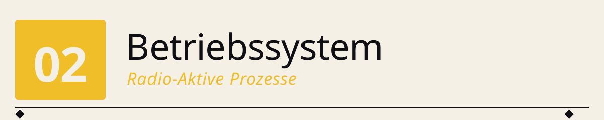
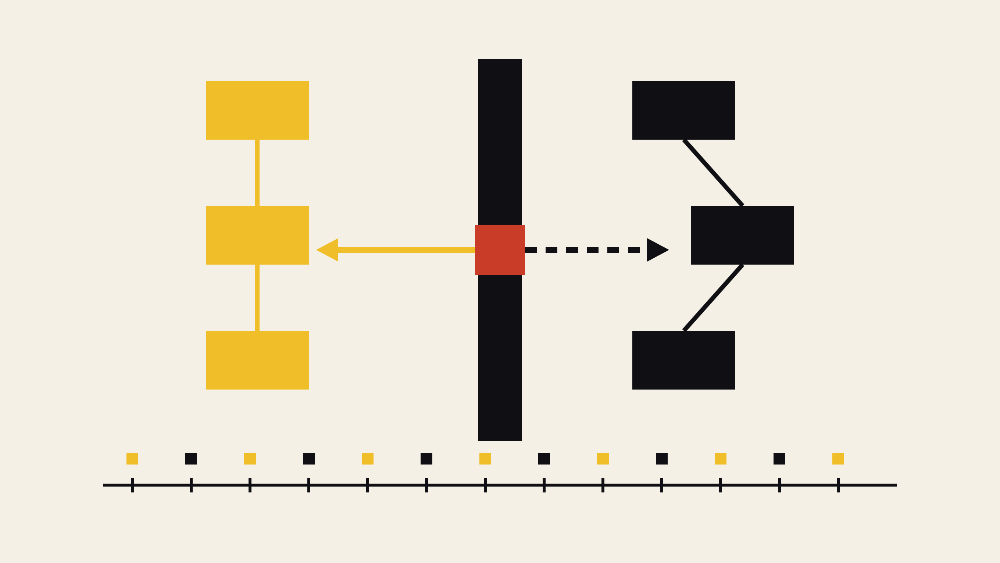

Programm A + B = zwei Prozesse ◆ Scheduler in der Mitte = Umschalter ◆ Takt-Band unten = gemeinsame Zeitachse ◆ A/B-Marker = wer läuft gerade.
──────────◆──────────◆──────────◆──────────◆──────────
Wir bauen auf der 4-Bit-CPU des ersten Meilensteins ein winziges kooperatives Multitasking-Betriebssystem — mit Segment-Register, Prozess-Tabelle im RAM und Context-Switch bei jedem
YIELD. Zwei Programme laufen quasi-gleichzeitig, jedes in seinem eigenen Speicher-Segment, und man kann live zuschauen, wie das OS zwischen ihnen umschaltet. Alles, was ein modernes OS macht — Speicherverwaltung, Scheduling, Prozess-Isolation — ist auf 200 Zeilen Python heruntergebrochen.
🌉 Der Anfang: Wie kommen zwei Programme auf eine CPU?¶
1955, an der Manchester University, läuft eines der ersten wirklichen Betriebssysteme: das Atlas Supervisor. Ferrantis Atlas-Rechner hat einen einzigen Prozessor, aber Dutzende von Nutzern und Programmen. Das Supervisor-Programm entscheidet, welches gerade läuft, verwaltet den Speicher und sorgt dafür, dass ein Programm dem anderen nicht in die Suppe spuckt. Das ist die Geburt der drei Kernaufgaben, um die jedes OS bis heute kreist:
- Speicherverwaltung — jedes Programm bekommt seinen eigenen Adressraum
- Scheduling — das OS entscheidet, welches Programm wann läuft
- Prozess-Isolation — ein Programm sieht die Daten anderer Programme nicht
In diesem Meilenstein bauen wir diese drei Konzepte auf unserer 4-Bit-CPU nach — in extrem reduzierter Form, aber didaktisch ehrlich: die Prozess-Kontexte liegen wirklich im RAM, das Segment-Register existiert wirklich in der CPU, der Kontext-Wechsel ist wirklich beobachtbar.
Und der schönste Teil: das OS selbst ist so klein, dass man es an einem Nachmittag komplett verstehen kann.
🕰️ Historischer Kontext¶
| Jahr | Ereignis | Bedeutung |
|---|---|---|
| 1955 | GM-NAA I/O (General Motors + North American Aviation) | Erstes echtes Batch-OS: Jobs werden aus einem Kartenstapel nacheinander abgearbeitet |
| 1961 | CTSS (MIT) | Compatible Time-Sharing System — mehrere Nutzer teilen sich einen Rechner, jedes Terminal glaubt, den Rechner ganz für sich zu haben |
| 1962 | Atlas Supervisor (Manchester) | Erstes OS mit virtuellem Speicher — Programme sehen einen "flachen" Adressraum, das OS mappt ihn auf physisches RAM |
| 1969 | Unix (Bell Labs) | Prozesse als First-Class-Objekt, fork()/exec(), Rechte-System. Grundlage aller heutigen Server-OS |
| 1975 | CP/M (Digital Research) | Erstes OS für Mikrocomputer — direkter Vorfahre von MS-DOS |
| 1984 | Mac OS 1.0 | Kooperatives Multitasking — Programme geben freiwillig ab, exakt das Modell, das wir hier bauen |
| 1995 | Windows 95 / Linux | Preemptives Multitasking mit Timer-Interrupt: das OS kann Programme unterbrechen, egal ob sie wollen oder nicht |
Zwischen unserem winzigen MiniOS und einem modernen Linux-Kernel liegen 60 Jahre Ingenieurskunst — aber die Grundzüge sind unverändert.
🧠 Die Aufgabe: „Zwei Zähler laufen gleichzeitig"¶
Wir starten zwei kleine Programme:
count_up.asm zählt hoch:
LDI 0 ; AX = 0
STA 0 ; RAM[0] = 0
LDA 0 ; AX = RAM[0]
LDB 1 ; BX = 1
ADD ; AX += 1
STA 0 ; RAM[0] = AX
OUT ; sichtbar
YIELD ; gib Kontrolle ab
JMP 2 ; von vorne (Schleifenkopf)
count_down.asm zählt runter:
Beide Programme benutzen intern dieselbe RAM-Adresse RAM[0]. Aber sie liegen in verschiedenen Segmenten:
- count_up läuft in SEG=1 → physisch RAM[0x10..0x1F]
- count_down läuft in SEG=2 → physisch RAM[0x20..0x2F]
Der Trick: die CPU sieht bei jedem Speicherzugriff nur die logische 4-Bit-Adresse aus dem Programm, aber die Fetch-Logik der Control Unit rechnet automatisch:
So denken beide Programme, sie hätten ihre eigenen 16 Zellen — und in gewissem Sinne haben sie das auch. Ein STA 0 von count_up verändert count_downs Zähler nicht.
🧩 Architektur: was ist neu gegenüber der reinen CPU?¶
Nur zwei Dinge:
1. Segment-Register (SEG, 4 Bit)¶
Ein neues Bus-Element:
class SegmentRegister(Element):
"""Segment-Register (4 Bit). Wird nur vom OS gesetzt —
kein normaler Bus-Zugang für User-Programme."""
Wichtig: das SEG-Register hat kein normales Bus-Gate. Es steht bewusst NICHT im elements-Dict der CPU-Config, d.h. es gibt kein SEG_IN/SEG_OUT-Signal. Das SEG-Register kann nur durch privilegierten Zugriff vom OS gesetzt werden — genau wie in echter Hardware das Segment-Register (bei Intel: CS/DS/ES/SS) nur mit Ring-0-Berechtigung geschrieben werden darf.
2. YIELD-Opcode¶
Ein neuer Befehl, der wie ein NOP durchläuft, aber ein Flag setzt:
Und im CPU-Kern:
Das ist konzeptuell ein Software-Interrupt: das Programm signalisiert dem OS "ich gebe freiwillig ab". Auf echter Hardware wäre das ein INT-Befehl.
3. RAM auf 256 Zellen¶
Der RAM wächst von 16 auf 256 Zellen, aufgeteilt in 16 Segmente à 16 Zellen. Angezeigt wird immer nur das gerade aktive Segment (bestimmt durch SEG); die Belegung der anderen Segmente steht als kompakte Übersicht darüber:
╔ RAM 16×16x4 ═══════════════════════════╗
║ seg: 0 1 2 3 4 5 6 7 8 9 A B C D E F ║ ← Segment-Übersicht
║ 0 1 2 3 ║
║ 0: 0 0 0 0 ║ ← aktives Segment (4×4-Grid)
║ 1: 0 7 0 0 ║
║ 2: 0 0 0 0 ║
║ 3: 0 0 0 0 ║
║ seg=1 off=1 value = 7 ║
╚════════════════════════════════════════╝
🌀 Das Mini-OS¶
Das MiniOS ist eine Python-Klasse, die die CPU orchestriert:
MiniOS
├── Prozess-Tabelle (2 Prozesse)
├── OS-Segment (SEG=0) im RAM — hält Prozess-Kontexte
├── tick() ← wird stattdessen von cpu.tick() aufgerufen
└── context_switch() ← speichert alten, lädt neuen Kontext
Speicher-Layout im OS-Segment (SEG=0)¶
| Adresse | Inhalt |
|---|---|
0 |
PC von Prozess 0 |
1 |
AX von Prozess 0 |
2 |
BX von Prozess 0 |
3 |
SEG von Prozess 0 (=1) |
4 |
PC von Prozess 1 |
5 |
AX von Prozess 1 |
6 |
BX von Prozess 1 |
7 |
SEG von Prozess 1 (=2) |
... |
(frei) |
F |
aktuelle Prozess-ID (Anzeige) |
Beim Kontext-Wechsel passieren zwei Dinge:
1. Save: die aktuellen Werte der Register PC, AX, BX, SEG werden ins OS-Segment geschrieben.
def _save_context(self, pid):
base = pid * 4
self.cpu.ram.cells[base + 0] = self.cpu.pc.value
self.cpu.ram.cells[base + 1] = self.cpu.acc.value # AX
self.cpu.ram.cells[base + 2] = self.cpu.tmp.value # BX
self.cpu.ram.cells[base + 3] = self.cpu.seg.value
2. Restore: die Werte des nächsten Prozesses werden aus dem OS-Segment in die Register geladen.
def _load_context(self, pid):
base = pid * 4
self.cpu.pc.value = self.cpu.ram.cells[base + 0]
self.cpu.acc.value = self.cpu.ram.cells[base + 1]
self.cpu.tmp.value = self.cpu.ram.cells[base + 2]
self.cpu.seg.value = self.cpu.ram.cells[base + 3]
self.cpu.program = self.processes[pid].program # Programm-Ptr
Das ist alles. In diesen 8 Zeilen Python steckt der Kern jedes Multitasking-Betriebssystems.
⚙️ Der Ablauf: was passiert bei einem YIELD?¶
Zeichnen wir einen Tick durch:
- Prozess
upläuft, sein PC steht auf 7 (YIELD-Befehl). cpu.tick():- CU dekodiert
YIELD→ Signal-Set{YIELD, END} - Weder Bus-Aktivität noch ALU-Op — YIELD ist reine Aktion
apply_actions()setztcpu.yielded = TrueMiniOS.tick()sieht:cpu.yieldedist wahr:- Save: schreibt
pc=8, ax=7, bx=1, seg=1inOS_SEG[0..3] - Round-Robin:
current = 1 - Load: liest
pc=…, ax=…, bx=…, seg=2ausOS_SEG[4..7]und schreibt in die Register - lädt
cpu.program = programs[1](den Code voncount_down) - Nächster Tick: die CPU führt den
count_down-Code aus — mit ihrem Zustand.
Und ganz nebenbei: SEG steht jetzt auf 2, also gehen LDA 0 / STA 0 in count_down automatisch nach RAM[0x20]. Kein Programm-Code muss das wissen.
▶️ So startest du das Programm¶
cd OS/src
python os_sim.py # count_up + count_down
python os_sim.py programs/count_up.asm programs/count_down.asm # explizit
Test (ohne Anzeige, für CI):
Voraussetzung: Python 3.7+, keine externen Abhängigkeiten. UTF-8-fähiges Terminal.
📈 Beispielausgabe (nach 200 Takten)¶
after 200 ticks:
Prozess 'up' (SEG=1) -> RAM[0]=7 yields=7
Prozess 'down' (SEG=2) -> RAM[0]=8 yields=7
OS-Segment (SEG=0) -> [8, 7, 1, 1, 8, 8, 1, 2, ...]
Current pid -> 0
Lies das so:
- up hat 7-mal YIELD gemacht und steht bei 7 (also 0→1→...→7).
- down hat auch 7-mal YIELD gemacht und steht bei 8 (0xF→0xE→...→8).
- Im OS-Segment stehen beide Kontexte: up: PC=8, AX=7, BX=1, SEG=1. down: PC=8, AX=8, BX=1, SEG=2.
Beide Prozesse liefen fair alternierend, jeder in seinem eigenen Segment. ✓
🔒 Was heißt hier „Isolation"?¶
Die Prozesse können ihre Daten nicht gegenseitig überschreiben, weil jeder von ihnen einen eigenen SEG-Wert hat und dieser bei jedem RAM-Zugriff automatisch als High-Nibble der Adresse verwendet wird. Ein STA 0 von up (SEG=1) schreibt in RAM[0x10]; dasselbe Programm mit SEG=2 würde in RAM[0x20] schreiben.
Wichtig: das ist nur ein Schutz vor sich selbst, kein Schutz vor bösartigem Code. Ein Programm, das die SEG-Grenzen kennt, könnte in Theorie sein Segment "verlassen" — wenn wir ihm die Möglichkeit gäben, SEG zu ändern. Aber genau das haben wir verhindert:
- Das SEG-Register hat kein
SEG_IN-Bus-Signal. - Kein Opcode im Mikrocode kann SEG beschreiben.
- Der einzige Weg, SEG zu ändern, ist der privilegierte OS-Code (
self.cpu.seg.value = ...direkt in Python).
Das ist die simpelste denkbare Form von Kernel-Mode-Schutz.
❗ Ehrliche Diskussion: was zeigt dieses OS — und was nicht?¶
Was es korrekt zeigt:
- Speicher-Segmentierung (wie bei Intel 8086 CS/DS): logische vs. physische Adresse
- Prozess-Kontext (PC + Registers + Segment) im Kernel-Speicher
- Context-Switch: Save alter Zustand → Restore neuer Zustand
- Kooperatives Multitasking (wie Mac OS Classic, Windows 3.x)
- Prozess-Isolation durch Segmente
- Kernel/User-Trennung (SEG ist "privileged")
Was es bewusst nicht zeigt:
- Preemptives Multitasking — es gibt keinen Timer-Interrupt. Ein Programm, das kein
YIELDmacht, würde die CPU für immer belegen. Die Lösung wäre ein Zähler in der Simulation, der nach N Takten für das Programm ein YIELD auslöst — aber das haben wir bewusst weggelassen, um das YIELD-Prinzip klar zu zeigen. - Ein OS, das im RAM lebt und selbst Instruktionen ausführt — unser OS ist Python-Code, der die CPU orchestriert. Realistischer wäre ein OS-Assembler-Programm, aber das würde weitere Konzepte brauchen (Interrupt-Handler, IRET, ...).
- Programm-Loader aus Persistenz — unsere Programme sind vor dem Start ins Python geladen und werden per
cpu.program = ...gewechselt. Auf echter Hardware wären alle Programme gleichzeitig im PROG-ROM, und das OS würde nur PC + SEG umsetzen. Das ist der "Harvard-Fake", den wir im Code-Kommentar explizit machen. - Systemaufrufe — es gibt kein "Syscall"-Konzept. In einem "echten" nächsten Schritt würde
YIELDdurch verschiedene Syscall-Nummern ergänzt:SYS_WRITE,SYS_READ, ... - Dateisystem, Netzwerk, GUI — alles zu groß für 4 Bit.
Das ist die Idee — nicht das fertige OS.
📝 Übungen¶
1. Verifiziere die Isolation. Ändere count_up.asm so, dass es explizit RAM[8] beschreibt (z.B. LDI 0xF; STA 8). Startet das OS neu und schaue in die Segment-Übersicht: Segment 1 sollte RAM[8]=0xF haben, Segment 2 aber nicht.
2. Was passiert bei fehlendem YIELD? Nimm den YIELD-Befehl aus count_up.asm raus. Das Programm läuft dann in einer Endlosschleife und count_down kommt nie an die Reihe. Wie schnell erkennt man das (count_up.RAM[0] wächst, während count_down.RAM[0] bei 0xF bleibt)?
3. Ein drittes Programm. Der aktuelle MiniOS ist hart auf 2 Prozesse verdrahtet, aber im OS-Segment ist Platz für mehr. Erweitere MiniOS.__init__ so, dass es beliebig viele Prozesse akzeptiert (solange sie in die 15 verfügbaren User-Segmente passen). Wie ändert sich das Rendering der Prozess-Tabelle?
4. Zeitscheiben statt YIELD. Ergänze MiniOS.tick() um einen Zähler ticks_in_slice. Wenn er einen Grenzwert (z.B. 20) erreicht, macht das OS einen erzwungenen Context-Switch — auch ohne YIELD. Das ist Preemption ohne Hardware-Interrupt. Wie beeinflusst der Grenzwert das Verhalten?
5. Systemaufruf. Definiere einen neuen Opcode SYS n. Wenn das Programm SYS n aufruft, macht das OS je nach n etwas Sinnvolles: SYS 0 = "gib meinen SEG-Wert in AX zurück", SYS 1 = "gib mir den Wert der aktuellen Uhrzeit" (z.B. tick_counter mod 16), etc. Zeigt: OS-Services über einen definierten Aufruf-Mechanismus.
🧭 Wo steht das Mini-OS heute?¶
- Speicher-Segmentierung war bis in die 1990er Jahre bei Intel Standard (real mode, 80286 protected mode). Erst mit dem 80386 kam Paging dazu; heutige 64-Bit-x86-CPUs benutzen Segmentierung praktisch gar nicht mehr, sondern nur noch Paging. ARM hat nie Segmentierung gehabt.
- Kooperatives Multitasking wurde 1995/2001 (Windows 95 bzw. Mac OS X) durch preemptives ersetzt. Der Vorteil: ein hängender Prozess kann das System nicht mehr blockieren. Der Preis: mehr Hardware (Timer-Interrupt) und ein komplexerer Scheduler.
- Context-Switch dagegen sieht bei modernen OS praktisch aus wie hier — nur eben mit deutlich mehr Registern (16-32 statt 3) und in Nanosekunden statt "einem Tick".
Und die schöne Klammer: Docker-Container und virtuelle Maschinen sind konzeptionell nichts anderes als die 60-Jahre-Weiterentwicklung des Atlas Supervisors: „gib jedem Prozess seinen eigenen Adressraum und seine eigene Sicht auf die Welt".
🧠 Abschließende Bemerkungen¶
Wir haben in diesem Meilenstein drei Dinge gemacht, die zusammen ein echtes Betriebssystem ausmachen:
- Segment-Register in Hardware — jedes Programm bekommt seinen eigenen Adressraum.
- Prozess-Tabelle im Kernel-Speicher — der Zustand jedes Prozesses ist explizit.
- Kontext-Wechsel bei
YIELD— der Kern jedes Multitasking-OS.
Das Zusammenspiel dieser drei Bausteine ist bereits die Grundstruktur eines Linux-Kernels — nur mit ein paar Milliarden Instruktionen mehr drum herum: Dateisysteme, Netzwerkstacks, Scheduler-Optimierungen, virtueller Speicher, Container, Sicherheit. Aber das Grundmuster ist da: schütze die Hardware vor den Programmen, teile sie gerecht auf, halte den Zustand jedes Programms fest. Der Rest ist Ausbau.
Und die schöne Parallele zu den Nachbarmeilensteinen: - Perceptron → GPT ist Skalierung eines Neurons. - Minimal-CPU → moderner Prozessor ist Skalierung einer Rechen-Einheit. - MiniOS → Linux/Windows ist Skalierung eines Context-Switch-Mechanismus.
Immer dasselbe Muster: aus einem winzigen, klaren Baustein wird durch Vervielfältigung und Verfeinerung ein modernes System.
🚀 Nächstes Kapitel: Compiler¶
Damit haben wir die Kette Hardware → Betriebssystem geschlossen. Was fehlt, ist die Programmiersprache: bisher schreiben wir alles direkt in Assembler.
Der Compiler-Meilenstein übersetzt eine kleine Hochsprache in Assembler für die Zwei-Register-CPU:
wird zu
LDI 3 ; x
STA 0 ; RAM[0] = x
LDI 4 ; y
STA 1 ; RAM[1] = y
LDA 0 ; AX = x
LDBM 1 ; BX = y
ADD ; AX = x + y
OUT
HLT
Damit ist die komplette Software-Hardware-Kette abgedeckt:
Hochsprache → Compiler → Assembler → Mikrocode → Bus-Signale
↓ ↓
Prozess Hardware
↓
Mini-OS ── verwaltet ─── mehrere Prozesse
...und jede Schicht ist in dieser Reihe selbst programmiert, ohne Frameworks.
📚 Referenzen¶
- Kilburn, T., Payne, R. B., & Howarth, D. J. (1961). The Atlas Supervisor. Proceedings of the Eastern Joint Computer Conference.
- Corbató, F. J., Merwin-Daggett, M., & Daley, R. C. (1962). An Experimental Time-Sharing System (CTSS). Proceedings of the Spring Joint Computer Conference.
- Dijkstra, E. W. (1968). The Structure of the "THE" Multiprogramming System. Communications of the ACM, 11(5), 341–346. Das erste sauber strukturierte OS mit Schichten und Semaphoren.
- Ritchie, D. M., & Thompson, K. (1974). The UNIX Time-Sharing System. Communications of the ACM, 17(7), 365–375.
- Tanenbaum, A. S. (2015). Modern Operating Systems (4th ed.). Pearson. Der Standard-Referenz für alle OS-Konzepte, die wir hier in Miniatur nachbauen.
- Intel Corporation (1982). iAPX 286 Programmer's Reference Manual. Enthält die Beschreibung von Segment-Registern (CS/DS/ES/SS), der direkten Vorlage für unser SEG-Konzept.
🔀 Weg 2: Das OS ist ein Assembler-Programm¶
Der oben beschriebene MiniOS (Weg 1) ist ein Python-Programm, das die CPU von außen orchestriert. Das ist didaktisch klar, aber inkonsequent: die Kernelfunktionen (Context-Switch, Scheduling, Register-Zugriff) laufen außerhalb der Maschine, die wir gerade als "Computational Minimum" definiert haben. Aus dem Blickwinkel unserer 4-Bit-CPU ist das OS "Magie".
Weg 2 macht die Probe aufs Exempel: kann man ein Betriebssystem in denselben 16 Opcodes schreiben, die auch die Nutzerprogramme benutzen? Und passt es in 16 Instruktionen — also einen einzigen "Slot" im Programmspeicher?
Die Antwort ist ja. Wir bauen ein historisch früheres Modell nach: ein Batch-OS wie GM-NAA I/O (1955) oder das ATLAS Supervisor (1961). Kein Multitasking, keine Zeitscheiben — Programme laufen nacheinander, jedes bis zum HLT, dann wird das nächste geladen.
🧱 Die zwei Zutaten der Hardware¶
Um ein OS in der CPU laufen zu lassen, braucht es zwei minimale Hardware-Erweiterungen:
1. Base-Pointer (BP, 4 Bit) — segmentierter Programmspeicher¶
Der Programmspeicher wächst auf 256 Zellen = 16 Slots à 16 Instruktionen. Ein neues Register BP selektiert den aktiven Slot:
BP = 0→ OS-CodeBP = 1..F→ bis zu 15 Nutzerprogramme
BP hat kein Bus-Gate (analog zu SEG in Weg 1) — d.h. es gibt kein Steuersignal, mit dem BP über einen normalen Opcode geschrieben werden könnte. Das ist die Simulations-Analogie zu Ring-0-Schutz.
2. Zwei neue Opcode-Semantiken¶
-
Damit verlässt das OS sich selbst und startet ein Nutzerprogramm.SETBP— der einzige Weg,BPzu ändern: -
Das heißt:HLT— bekommt eine erweiterte Semantik. WennBP ≠ 0:HLTist im Nutzer-Modus kein "Rechner stoppen", sondern ein Trap zurück ins OS. Nur wenn das OS selbstHLTausführt, stoppt die Maschine wirklich.
Und der elegante Trick: Uninitialisierter Speicher (Opcode 0) ist HLT. Ein leerer Slot fällt also sofort ins OS zurück — vergleichbar mit dem BRK-Verhalten des 6502.
📜 Das OS in 10 Instruktionen¶
programs/os.asm:
; last_index in RAM[0]. Beim Boot ist RAM[0]=0.
LDA 0 ; 0: AX := RAM[0] (last_index)
LDB 1 ; 1: BX := 1
ADD ; 2: AX := AX + BX (next_index)
JZ 5 ; 3: falls Overflow (15+1=0 in 4 Bit) -> Reset-Zweig
JMP 7 ; 4: sonst weiter zu STA
LDI 1 ; 5: Reset: AX := 1 (skip OS-Slot beim Wrap)
NOP ; 6: fallthrough zu 7
STA 0 ; 7: RAM[0] := AX (persistiere next_index)
MOV ; 8: BX := AX (SETBP nimmt BX)
SETBP ; 9: BP := BX, PC := 0 (User-Prog starten -- OS-Ende)
Das ist alles. In 10 Instruktionen steckt:
- ein persistenter Job-Counter im RAM (STA 0 speichert, LDA 0 liest ihn zurück)
- ein Round-Robin-Scheduler durch alle 15 User-Slots
- ein Wrap-Around, der bewusst Slot 0 (=OS) überspringt, damit das OS sich selbst nicht als Job aufruft
- ein sauberer Kontroll-Transfer via SETBP
Der Rest — Kontext-Wiederherstellung, Scheduling-Entscheidungen — passiert nicht, weil er nicht gebraucht wird: es gibt keinen Kontext zu wiederholen (jeder Job startet frisch), und der Scheduler ist trivial (immer der nächste Index).
⚙️ Der Ablauf, Schritt für Schritt¶
Boot : BP=0, PC=0, RAM[0]=0
→ OS läuft ab Slot 0
OS-Durchgang 1 : RAM[0]=0, next=1, RAM[0]:=1
SETBP → BP=1, PC=0
→ job1 läuft
job1 Ende : HLT → BP=0, PC=0
→ OS läuft wieder
OS-Durchgang 2 : RAM[0]=1, next=2, RAM[0]:=2
SETBP → BP=2, PC=0
→ job2 läuft
... usw. bis Slot F, dann Wrap zurück zu 1.
Leere Slots (kein Programm geladen) enthalten Nullen = HLT. Ein Sprung dahin trappt sofort zurück ins OS — man sieht das schön im Log: pro leerem Slot exakt 2 Ticks (Fetch + Trap-Handling).
🧪 Ausprobieren¶
cd OS/src
python os_batch.py # Default: job1 + job2
python os_batch.py programs/job1.asm programs/job2.asm # explizit
Headless-Tests:
cd OS
python test_os_batch.py # Ende-zu-Ende: OS lädt job1, job2, leere Slots
python test_os_batch_wrap.py # Wrap-Around: F+1 → 1 (nicht 0!)
python test_os_batch_evil.py # böser Job manipuliert OS-State (Übung)
🔓 Der große Punkt: es gibt keinen Speicherschutz¶
Der RAM hat weiterhin 16 Zellen, und OS und User teilen ihn sich. RAM[0] gehört per Konvention dem OS (dort liegt last_index), aber technisch kann jeder Job dort schreiben. Was passiert dann?
Wir haben das ausprobiert. programs/job_evil.asm:
Wird dieser Job als Slot 1 geladen, ergibt sich die Aufruf-Reihenfolge:
Job 2 verhungert. Bei jedem Wrap-Around kommt zwar wieder Slot 1 (job_evil) dran, der überschreibt RAM[0] wieder mit 7, und die Sequenz beginnt von vorne. Slot 2 hat keine Chance, jemals ausgeführt zu werden.
Aber — und das ist der entscheidende Punkt — das System crasht nicht. Es rechnet weiter, in einer manipulierten aber stabilen Schleife. Genau das war der Alltag der DOS- und CP/M-Ära: Programme, die Kernel-Speicher überschrieben, verursachten seltsame Effekte, aber selten sofortige Abstürze. Das lag daran, dass die Struktur des OS (im PROG-ROM) unantastbar war — nur die Daten des OS (im RAM) konnten korrumpiert werden.
Die drei Verteidigungslinien echter OS wurden genau als Antwort auf solche Bugs eingeführt:
- Speicherschutz (MMU, ab 1970er) — verhindert, dass User-Code überhaupt in Kernel-RAM schreiben kann.
- Getrennte Adressräume (ab Unix, 1969) — jeder Prozess sieht seinen eigenen RAM, nicht den des OS.
- Prüfen bei Systemaufrufen — das OS überprüft, ob Argumente sinnvoll sind, statt blind zu glauben.
Wir haben nichts davon. Und wir sehen genau, wie sich das anfühlt.
🧭 Vergleich der beiden Wege¶
| Aspekt | Weg 1: MiniOS |
Weg 2: os_batch |
|---|---|---|
| OS ist... | Python-Klasse | Assembler-Programm |
| Läuft in... | Python-Interpreter | der CPU (BP=0) |
| Context-Switch | Python setzt Register direkt | SETBP/HLT-Trap |
| Speicherschutz | ja (Segment-Register) | nein |
| Multitasking | ja, kooperativ | nein, batch |
| OS-Zeilen | ~150 Zeilen Python | 10 Zeilen Assembler |
| Historisches Vorbild | Mac OS Classic, Windows 3.x | GM-NAA I/O (1955) |
| Zeigt am besten | Context-Switch, Isolation | Boot, Ring-0-Konvention, unsicherer State |
Die beiden Wege sind komplementär: Weg 2 zeigt, wie ein OS funktionieren kann mit minimalen Mitteln, Weg 1 zeigt, was daraus wird, wenn man Isolation und Multitasking ernst nimmt. In der Praxis kombiniert man beides — moderne Kernels sind selbst Programme (Weg 2) und haben trotzdem Isolation + Multitasking (Weg 1). Der Weg von unserer Batch-CPU zu einem realen Linux-Kernel führt über genau die drei oben genannten Verteidigungslinien.
📝 Übungen zum Batch-OS¶
A1. Den bösen Job entfernen. Ersetze job_evil.asm in test_os_batch_evil.py durch job1.asm. Ist die Aufrufreihenfolge jetzt wieder monoton? Warum?
A2. Weniger böser Job. Ändere job_evil.asm so, dass es nur RAM[0] := 0 schreibt (statt 7). Was passiert? Tipp: der OS-Counter wird nie über 1 hinauskommen.
A3. Der Killer-Job. Kann man einen Job schreiben, der das OS wirklich zum Absturz bringt? (Idee: einen Job, der SETBP selbst benutzt und BP=0 setzt — dann liegt der PC im OS, aber die Register sind User-kontaminiert. Was passiert dann? Probiere es aus.)
A4. Zeit-Instrumentierung. Modifiziere os.asm so, dass es OUT := next_index macht, bevor es via SETBP verlässt. Dann kann man am OUT-Register live sehen, welcher Slot als nächstes drankommt. Kostet 1-2 zusätzliche Instruktionen (STA gegen OUT tauschen bringt nichts, denn OUT zerstört AX nicht).
A5. Job-Ergebnisse einsammeln. Ergänze os.asm so, dass es nach dem letzten Job (BP=F) selber HLT macht — also nicht wieder auf 1 wrapt. Das wäre ein "run once through all jobs, then halt"-Modell, wie es GM-NAA I/O tatsächlich hatte (der Rechner stoppte am Ende des Kartenstapels). Was muss du im OS-Code ändern? Bekommst du es in 16 Instruktionen?
🔮 Was fehlt (bewusst)¶
- Kein Multitasking. Ein Prozess läuft, bis er fertig ist. Das ist Batch, 1955. Für kooperatives Multitasking bräuchten wir einen
YIELD-Opcode, der zusätzlich zum Kontrollwechsel auch alle Register speichert — und das führt uns zu mehrschrittigen Mikrocode-Sequenzen, die das Prinzip "eine Instruktion = ein Bus-Cycle" brechen. Der ehrliche Weg dorthin: entweder Auto-Push im YIELD (dann fett), oder ein Shadow-Register-File (dann mehr Hardware). Beides ist ein eigenes Kapitel wert. - Kein Speicherschutz. Siehe oben — das ist Absicht.
- Kein Loader. Die Jobs werden vom Python-Runner in den PROG-ROM geschrieben. Ein "echter" Loader würde ein Programm von einem persistenten Medium (Band, Karten) in den Speicher lesen. Das wäre ein weiteres eigenes Kapitel (Bootloader, Format des Ladeprogramms usw.).
- Kein Syscall. Ein Job kann nichts vom OS anfordern (Zeit, andere Jobs, Speicher). Alle Kommunikation läuft indirekt über den RAM.
📂 Dateien zu Weg 2¶
OS/
├── src/
│ ├── cpu_sim/
│ │ ├── core.py ← erweitert um BasePointer, HLT-Trap, SETBP
│ │ └── config_batch_os.py ← neue CPU-Config (BP + SETBP + HLT-Trap)
│ ├── programs/
│ │ ├── os.asm ← das OS in 10 Instruktionen
│ │ ├── job1.asm ← Beispiel: 3+4=7
│ │ ├── job2.asm ← Beispiel: Schleife bis 4
│ │ └── job_evil.asm ← Übung: überschreibt OS-State
│ └── os_batch.py ← Runner mit Terminal-Visualisierung
├── test_os_batch.py ← End-to-End-Test
├── test_os_batch_wrap.py ← Wrap-Around-Test (F+1 → 1)
└── test_os_batch_evil.py ← Manipulation durch bösen Job